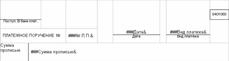

DRKB Explorer
Cоздание документа MS Word
01.01.2010
Труд программиста оценивается только пользователями и почти всегда по конечному результату. Используя материалы первой и второй частей статьи "Суперфункции", мы уже имеем возможность предоставить пользователю свою программу формирования простого документа в редакторе Word в законченном виде.
В первой части мы разработали и использовали функции создания и сохранения документа, а также функции записи текста, но этого недостаточно для подготовки даже простого документа. Каким набором функций нужно пользоваться, чтобы подготовить, например, документ типа "Платежное поручение"?
Поставим задачу: создание документа "Платежное поручение", - и определим, какие функции для этого необходимы. Сам по себе документ "Платежное поручение" является табличным, т.е. в определенную таблицу вписаны значения некоторых текстовых и числовых переменных. К тому же этот документ не является многострочным. Можно найти еще массу примеров таких документов, поэтому технология подготовки "Платежного поручения" подойдет к большому количеству аналогичных документов.
Одним из способов, который можно применить для подготовки простых документов, является заполнение шаблона. Шаблон представляет собой некоторый документ, часть которого выполнена в виде таблицы, определенные ячейки которой заполнены наборами символов (словами). Обозначим эти слова как переменные, вместо которых будут подставляться реальные значения из программы в момент формирования документа. Способ с использованием переменных удобен тем, что он позволяет легко изменить документ, не изменяя программу формирования. Так как мы используем шаблон (подготовленный в виде документа Word), то для работы с ним необходима функция открытия ранее созданного документа. Функции поиска текста и перевода курсора в начало документа необходима для поиска слов-переменных для дальнейшей замены их реальными данными. Также может быть необходима функция задания шрифта и вывода на печать готового документа.
Определим функцию открытия ранее созданного документа OpenDoc. Для этого используем метод Open коллекции Documents, которая нами уже использовалась в функции создания нового документа. Функция Open, кроме обязательного аргумента (имени файла), может иметь ряд дополнительных аргументов, которые определяют режим открытия. Она возвращает ссылку на объект типа Document, но в нашем случае будем использовать только обязательный аргумент.
Function OpenDoc (file_:string):boolean;
Var Doc_:variant;
begin
OpenDoc:=true;
try
Doc_:=W.Documents;
Doc_.Open(file_);
except
OpenDoc:=false;
end;
End;
Фрагмент из двух операторов
Doc_:=W.Documents;
Doc_.Open(file_);
можно заменить одним
W.Documents.Open(file_);
Для перевода курсора в начало документа используем свойства End и Start объекта W.Selection. Эту функцию необходимо использовать каждый раз перед началом поиска текста, чтобы поиск осуществлялся с начала документа. Свойства End и Start объекта Selection можно использовать и для выделения диапазона текста, при этом в Start записывается номер начального символа фрагмента в тексте, а в End - номер конечного. В данном случае необходимо в оба поля записать нули.
Function StartOfDoc:boolean;
begin
StartOfDoc:=true;
try
W.Selection.End:=0;
W.Selection.Start:=0;
except
StartOfDoc:=false;
end;
End;
Функция поиска (FindTextDoc) фрагмента текста состоит из трех операторов. Первый и второй задают направление поиска (от начала к концу) и фрагмент для поиска, соответственно. Третий оператор выполняет поиск и возвращает результат. Функция возвращает True, если поиск удачный, и False - если нет. Во всех трех операторах используем поля и методы объекта Selection.
Function FindTextDoc (text_:string):boolean;
begin
FindTextDoc:=true;
Try
W.Selection.Find.Forward:=true;
W.Selection.Find.Text:=text_;
FindTextDoc := W.Selection.Find.Execute;
except
FindTextDoc:=false;
end;
End;
Функция FindTextDoc находит и выделяет фрагмент текста в документе. Для того, чтобы вставить новый текст вместо выделенного, создадим еще одну функцию. PasteTextDoc состоит из двух операторов, удаления выделенного фрагмента и вставки нового текста с положения курсора. Оба эти оператора используют объект Selection объекта W. Действие этой функции отличается от SetTextToDoc тем, что она вставляет изменения вместо выделенного фрагмента текста.
Function PasteTextDoc (text_:string):boolean;
begin
PasteTextDoc:=true;
Try
W.Selection.Delete;
W.Selection.InsertAfter (text_);
except
PasteTextDoc:=false;
end;
End;
Но более удобной была бы функция, которая одновременно подставляла бы новый текст на место найденного фрагмента. Создадим такую функцию.
Function FindAndPasteTextDoc
(findtext_,pastetext_:string): boolean;
begin
FindAndPasteTextDoc:=true;
try
W.Selection.Find.Forward:=true;
W.Selection.Find.Text:= findtext_;
if W.Selection.Find.Execute then begin
W.Selection.Delete;
W.Selection.InsertAfter (pastetext_);
end else FindAndPasteTextDoc:=false;
except
FindAndPasteTextDoc:=false;
end;
End;
И последнее, печать документа. В данной части рассмотрим только процедуру активизации диалогового окна печати. Этот диалог активизируется через метод Show объекта Dialogs(wdDialogFilePrint).Show. С помощью объекта Dialogs можно вызвать практически любое диалоговое окно Word'а, но об этих возможностях поговорим позже.
Функция будет выглядеть следующим образом:
Function PrintDialogWord:boolean;
Const wdDialogFilePrint=88;
begin
PrintDialogWord:=true;
try
W.Dialogs.Item(wdDialogFilePrint).Show;
except
PrintDialogWord:=false;
end;
End;
Имея необходимый набор функций, можно приступать к написанию программы (процедуры) создания простого документа Word средствами Delphi. Как говорилось ранее, для формирования документа нам необходим шаблон - текст в формате Word (файл с расширением doc, rtf). Создадим вручную этот файл и разместим его, например, на диске C: "C:\Шаблон платежного поручения.doc". Полный пример с исходными текстами можно взять на моей домашней странице (www.kornjakov.ru/st1_2.zip), а здесь, с целью экономии объема, представлен только фрагмент документа (см.рис.).

Общий алгоритм формирования документа таков:
| 1. | Открываем шаблон, используя функцию открытия ранее созданного документа. |
| 1. | Ищем слова-переменные и подставляем вместо них реальные значения, например, из базы данных. |
| 1. | Сохраняем документ под новым именем. |
| 1. | Печатаем документ, если это необходимо. |
Документ готов, и с ним можно работать как обычно, копировать, переименовывать и др.
Описанный выше алгоритм реализуем в виде небольшой программы. Для этого создаем новый проект и переписываем все функции (также и ранее созданные в первой части статьи) в модуль формы. Создаем на форме кнопку и в процедуру обработки ее нажатия пишем следующий программный код.
procedure TForm1.Button2Click(Sender: TObject);
begin
if CreateWord then begin
VisibleWord(true);
If OpenDoc('c:\Шаблон платежного поручения.rtf') then begin
messagebox(0,'Переходим к заполнению шаблона','Шаблон открыт',0);
StartOfDoc; while not
FindAndPasteTextDoc('###№ П.П.&','21') do;
StartOfDoc; while not
FindAndPasteTextDoc('###Дата&','21.05.2003') do;
StartOfDoc; while not
FindAndPasteTextDoc('###Вид платежа&','обычный') do;
StartOfDoc; while not
FindAndPasteTextDoc('###Сумма прописью&','Сто пятьдесят рублей 40 коп.') do;
SaveDocAs('c:\Платежное поручение.rtf');
messagebox(0,'Переходим к печати документа',
'Документ сформирован и сохранен',0);
PrintDialogWord;
CloseDoc;
end;
CloseWord;
end;
end;
Данная процедура сформирует документ и откроет окно диалога печати.
Мы сформировали простой документ, но обычно сложные документы содержат таблицы, графики, рисунки и другие компоненты. Все эти компоненты также можно создавать и настраивать из внешних программ, используя объекты и коллекции объекта Application. Все эти вопросы будут рассмотрены в следующей части статьи, там же в качестве примера рассмотрим создание документа, содержащего таблицу. По всем вопросам, касающимся материала этой статьи, вы можете обратиться к автору по адресу www.kornjakov.ru или _kvn@mail.ru.
Василий КОРНЯКОВ
Литература: Н. Елманова, С. Трепалин, А. Тенцер "Delphi 6 и технология COM" "Питер" 2002.